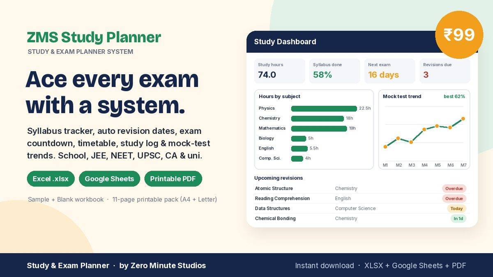
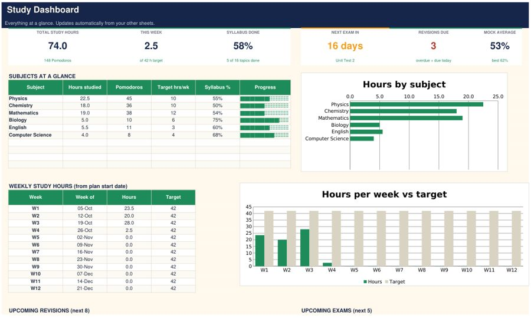
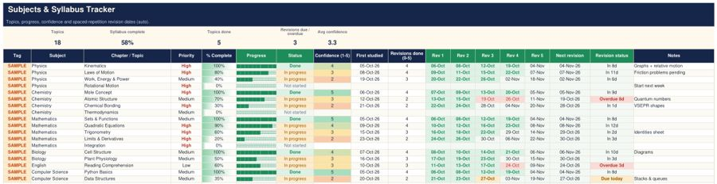

Study & Exam Planner System for Excel & Google Sheets

Ace every exam with a system, not a to-do list. One workbook tracks your whole syllabus, tells you when to revise each topic, counts down to every exam and shows your progress on a live dashboard.
- Syllabus Tracker: priority, % complete, confidence (1-5) and automatic revision dates 1, 3, 7, 14 and 30 days after you first study a topic (editable)
- Exam Countdown: days left per exam and how ready you are for each subject
- Weekly Timetable with planned hours per subject vs your target
- Daily Study Log with Pomodoro count
- Mock Test tracker: score %, average, best, latest and a trend chart
- Dashboard: study hours, hours by subject, weekly hours vs target, syllabus %, revisions due, next exam
- Blank and filled Sample workbook, no macros, up to 10 subjects
- 11-page printable PDF pack in A4 and US Letter
Preview


FAQ
Does it work in Google Sheets? Yes. Upload the .xlsx to Google Drive and open it with Google Sheets, or use Excel 2010 or newer.
How does the revision schedule work? Enter the date you first studied a topic and five revision dates appear automatically. Change the gaps on the Setup sheet.
What do I get? Instantly after payment: Blank and Sample workbooks plus the printable PDF pack (A4 and US Letter).
We don't do refund & return ✌️